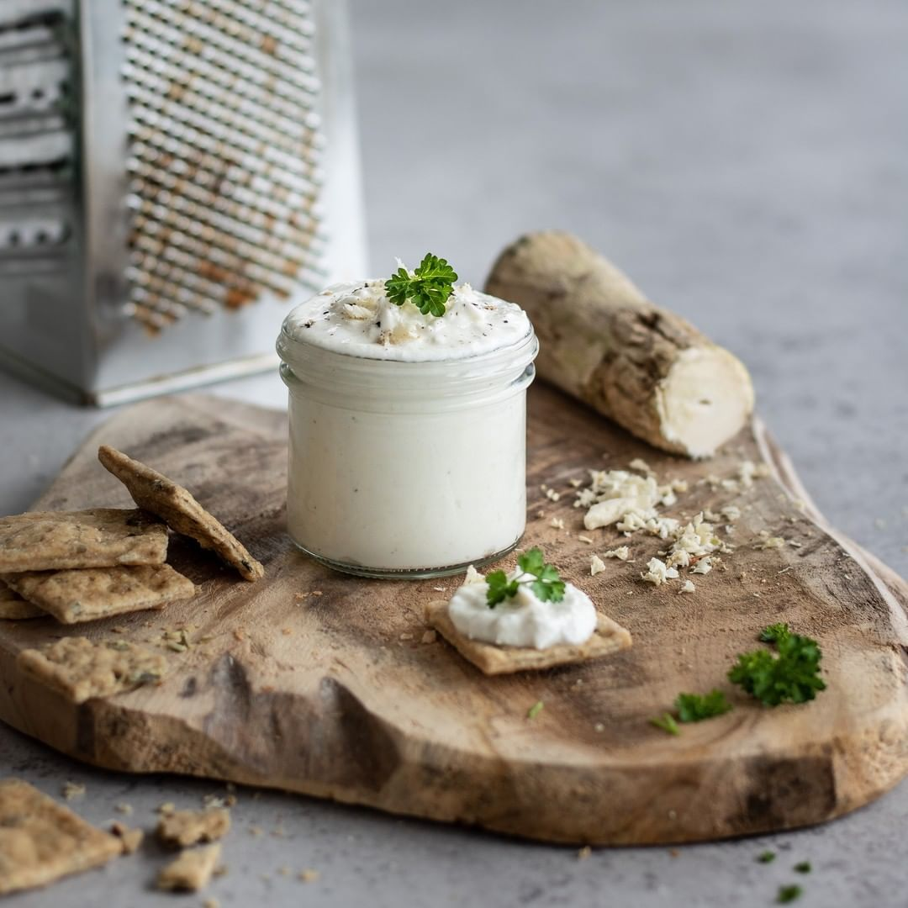

Zeleninová nátierka — Normy Jedál
Sú medzi nami milovníci nátierok? Ak áno, tak tvarohovú nátierku s chrenom musíte určite vyskúšať. A akú nátierku máte najradšej vy?
🍴 Tvarohová nátierka s chrenom 🍴
Príprava: 10 minút
Tepelná úprava: 0 minút
Náročnosť: ľahké
Počet porcií: 4
Výživové hodnoty na 1 kus: 114 kcal 7,3 g bielkovín 7,5 g tukov 4,3 g sacharidov
INGREDIENCIE:
40 g čerstvého chrenu
250 g polotučného tvarohu
125 ml sójovej smotany (alebo inej smotany na varenie)
½ lyžičky soli
½ lyžičky mletého čierneho korenia
POSTUP PRÍPRAVY:
1. Chren nastrúhajte najemno.
2. Tvaroh so smotanou vyšľahajte na jemný krém.
3. K vyšľahanému krému pridajte nastrúhaný chren, soľ a korenie.
4. Nátierku skladujte maximálne 4 dni v chladničke.
TIP:
Podávajte s čerstvou petržlenovou vňaťou, ražným chlebom, celozrnným pečivom alebo krekrami.
#natierka #tvaroh #tvarohovanatierka #nátierka #chren #rychlovka #dobrysmak #nachlieb #desiata #ranajky #raňajky #mojejedlo #zeleninovanatierka #dnesranajkujem #dnesraňajkujem #chutnerecepty #kedzdraviechuti #zdravemenu #vkuchyni #domacakuchyna #zijemzdravo #recepty #zdravoachutne #zdravo #topjedlo #zdravoafit #fitreceptysk #mojejedlo #dnesvarim #dnesobedujem